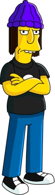
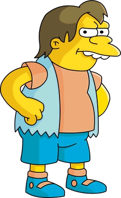
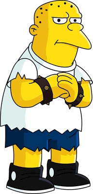
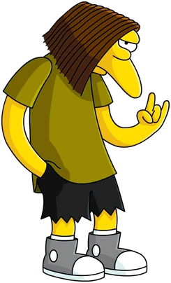

Jimbo Jones
Corky James "Jimbo" Jones, also known as James, Jamesbo, and Hector Gutierrez, is a student and bully at Springfield Elementary, with Dolph Starbeam, Kearney Zzyzwicz, Nelson Muntz, and the Weasels. He is a sixth grader, and has been held back multiple years.
- Bite me.
- Yeah, I love "Grimby"
Nelson Muntz
Nelson Mandela Muntz (born October 30) is a major character and recurring antagonist of The Simpsons and a child citizen of Springfield. He is the leader of the school bullies at Springfield Elementary School (despite being the youngest and shortest), even though he is also the most independent of them. He is a fourth-grader.
- Haw Haw!
Kearney Zzyzwicz
Kearney Zzyzwicz, Sr. (pronounced "jeez-wich") is one of the school bullies of Springfield Elementary, hanging around with Nelson Muntz, Dolph Starbeam, Jimbo Jones, and the Weasels. He is of Polish descent and is a fifth grader. A running gag is that Kearney is much older than all of the other kids at Springfield Elementary School, but has been held back from graduating for many years.
- First person to blink is a dead man.
- Shut up.
- Fixing the church should be our top priority! I say this as a teenager, and the parent of a teenager.
Dolph Starbeam
Dolphin "Dolph" Starbeam, also known as Dolph Shapiro, is one of the school bullies of Springfield Elementary, with Shauna Chalmers, Kearney Zzyzwicz, Jimbo Jones, Nelson Muntz, and the Weasels. He is of Jewish origin and can speak multiple languages. Bart Simpson later became friends with Dolph. He is a 14 to 15-year-old sixth grader and is the youngest of the trio of bullies.